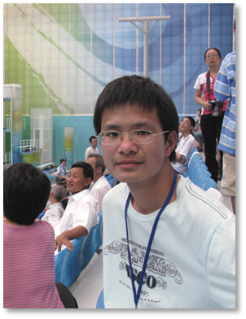
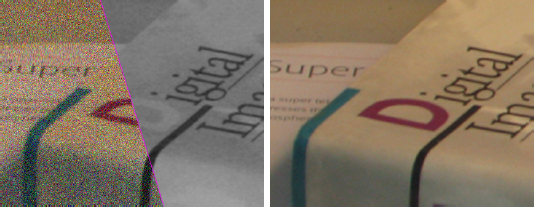
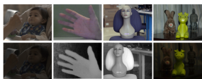
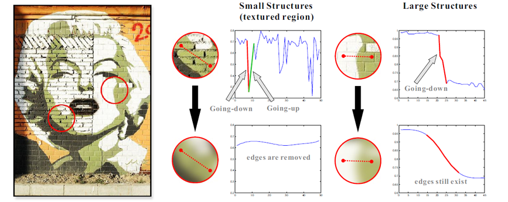
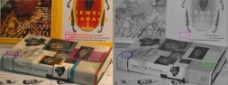
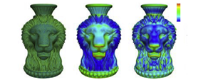

Xiaoyong Shen PhD CandidateRm 1026, Ho Sin-Hang Engineering Building Dept. of Computer Science and Engineering The Chinese University of Hong Kong Shatin, N.T., Hong Kong Email: |
 |
Biography
I am currently a PhD student in Computer Science and Engineering Department in the Chinese University of Hong Kong. My supervisor is Prof. Jiaya Jia. Before that, I received the B. S. degree in Computational Mathematics and M. S. degree in Applied Mathematics from Zhejiang University in 2010 and 2012 respectively, under the supervision of Prof. Ligang Liu.
My research interest includes computer graphics and computer vision.
Publications (My Google Scholar)
|  | Xiaoyong Shen, Qiong Yan, Li Xu, Lizhuang Ma, Jiaya Jia, "Multispectral Joint Image Restoration via Optimizing a Scale Map" IEEE Transactions on Pattern Analysis and Machine Intelligence (TPAMI), with minor revision. |
|  | Xiaoyong Shen, Li Xu, Qi Zhang, Jiaya Jia, "Multi-modal and Multi-spectral Registration for Natural Images" European Conference on Computer Vision (ECCV), 2014. |
|  | Qi Zhang, Xiaoyong Shen, Li Xu, Jiaya Jia, "Rolling Guidance Filter" European Conference on Computer Vision (ECCV), 2014. |
|  | Qiong Yan, Xiaoyong Shen, Li Xu, Shaojie Zhuo, Xiaopeng Zhang, Liang Shen, Jiaya Jia, "Cross-Field Joint Image Restoration vis Scale Map" IEEE International Conference on Computer Vision (ICCV), 2013. |
|  | Jinliang Wu, Xiaoyong Shen, Wei Zhu, Ligang Liu, "Mesh Saliency with Global Rarity" Graphical Models, 75(5): 255-264, 2013. |
| Jinliang Wu, Xiaoyong Shen, Ligang Liu, "Interactive Two-Scale Color-to-Gray" The Visual Computer (Proc. Computer Graphics International), 2013.
[paper] |
Honors & Awards
| Outstanding Graduate Awards of Zhejiang University, 2012 |
| Excellent Bachelor Thesis in Zhejiang University, 2010 |
| Outstanding Graduate Awards of Zhejiang University, 2010 |
| National Scholarship, 2009 |
| The First Prize of Research and Renovation of ZJU, 2008 |
| National Scholarship of Encouragement, 2008 |
| Excellent Student Scholarship in Zhejiang University, 2007-2010 |
| The Title of Excellent All-round Student in Zhejiang University , 2007-2010 |
| Outstanding Student Cadres in Zhejiang University, 2008 |
Professional Activities
Teaching
| 2014-2015 | Fall | CSCI1580 Visual Programming |
| 2013-2014 | Spring | ENGG2600A Technology, Society and Engineering Practice |
| 2013-2014 | Fall | CSCI1520 Computer Principles and C++ Programming |
Miscellanies
Research Papers
Computer Graphics Papers, Computer Vision Papers
Some of My Friends
Li Xu, Cewu Lu, Qiong Yan, Jianping Shi, Xiaoguang Han, Ruizhen Hu, Renjie Liao, Ziyang Ma, Xin Tao
Coding Resources
OpenCV, CGAL, OpenGL, CUDA, Visual Assist, Mosek, Matlab, Math Kernel Library, ANN, LAPACK, TAUCS, CXimage

© Xiaoyong Shen